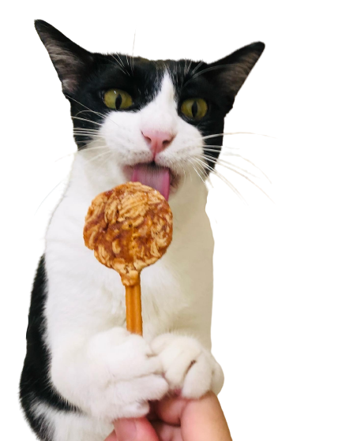

嗨!我是貍貍!
我用貓體工學跑跑跳跳!
自從在家裡裝了貓體工學的貓跳台，
我覺得貍貍變得更有活力了。
我覺得貍貍變得更有活力了。
一直租在10坪套房裡的我們兩貓兩口，一直以來我們一直很擔心貍貍的身體健康。
他是一隻非常貪吃的貓貓，但套房內空間太狹小，一般的玩具也沒辦法提起他的興趣，導致他越來越胖，看起來也越來越沒有精神。
去年決定購入落地式的貓跳台，不僅占的空間非常小(其實人類根本不會待在角落啦)，如果需要退租房子的話拆卸也很容易，有時還能順便當我的置物架XD
貍貍感覺很滿意這樣的空間，能看著他在上面跑跑跳跳，偶而躺在上面睡午覺，真的讓我很滿意我做的決定!


Life with my cats.
從居家生活創造一點一滴小小的美好。